LEC24C6 – Substrate characterization (ZnSe substrate)
Note It is worth explaining to users that substrate characterization may only be required in very special and rare situations. Typically, characterization uses substrates from well-known suppliers, and substrate refractive indices and extinction coefficients are already known with very high accuracy. There is no point in finding substrate parameters from spectrophotometric measurements of their transmittance and reflectance, since it is virtually impossible to obtain substrate parameters with greater accuracy than those provided by the suppliers.
The example considered here pertains to just such a special situation. It is necessary to find the refractive index and extinction coefficient of a ZnSe substrate for which only very limited information is available. The main reference for these data is the publication by Connolly et. al., Specifications of Raytran material, Proc. SPIE, 181, 141-144, 1979. Unfortunately, it contains data on the refractive index of ZnSe starting only at 540 nm, and it does not contain any data related to the extinction coefficient of ZnSe.
In the File -> Project menu of OptiChar, open the directory LEC24C6. There are three measurement datafiles named 400-800 nm, one side R data, 400-800 nm, T data, and 800-2500 nm, one side R data. There is also another file named 800-2500 nm, one side R data without 890-940 nm band, the contents of which will be explained later. The data files whose names contain “one side R data” contain reflectance data measured on a wedged ZnSe substrate to eliminate the influence of reflection from the substrate back side. Reflectance measurements were made at 8 degrees incidence. The second datafile contains normal incidence transmittance data. The measurement ranges are indicated in the datafile names.
Load the measurement datafile 400-800 nm, one side R data and check the checkbox Reflectance without back side in the General Information window. Go to the Substrate Characterization mode of the Characterization menu. The Data Fitting window show a non-monotonic dependence of the reflectance on the wavelength, which suggests a rather complex dependence of the refractive index on the wavelength.
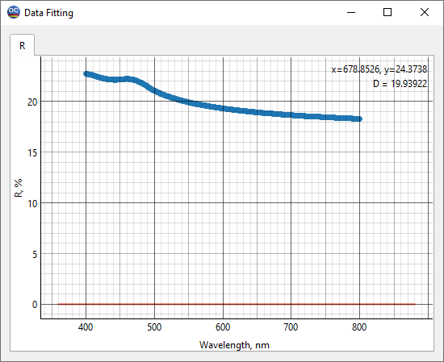
For this reason, we will select the n(lambda) model in the Substrate Characterization Setup window. Let us first use the default Smooth setting of the Re(n) slider on the right side the Setup window.
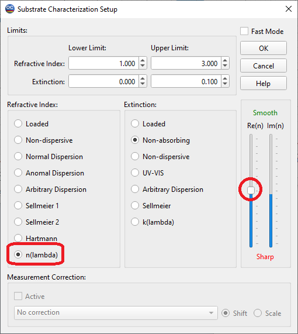
Click the OK button. The agreement between the model and the measured data is poor. Apparently, too high requirements for the smoothness of the substrate refractive index were applied. Check the obtained substrate refractive index in the Substrate Plots window.
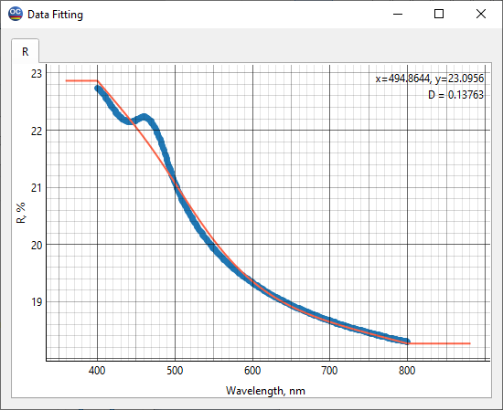 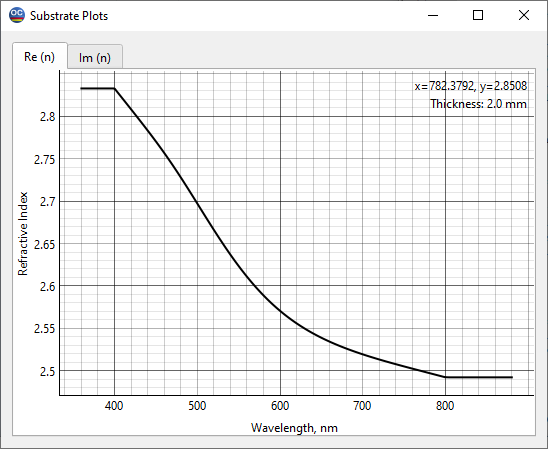
Go back to the Substrate characterization and reduce the requirement for the refractive index smoothness by moving the Smooth slider down two steps. Click OK. The agreement between the model and the measured data is better, but still poor at shorter wavelengths.
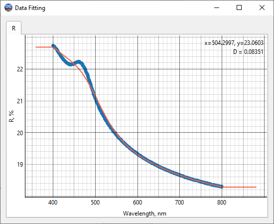
Go back to the Substrate characterization and further reduce the requirement for the refractive index smoothness by moving the Smooth slider down three steps. Click OK. Now a fairly good agreement is achieved between the model and the measured data.
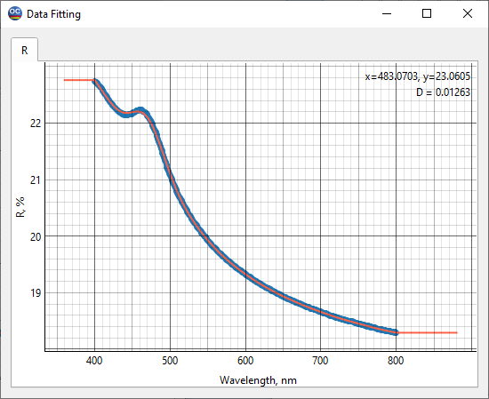
The found non-monotonic dependence of the substrate refractive index on wavelength is presented in the Substrate Plots window. It is stored in the Substrate database under the name ZnSe at 400-800 nm - n(lambda) model.
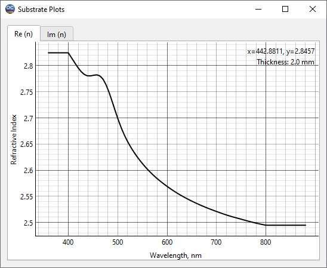
Load the 800-2500 nm, one side R data measurement datafile. Go to the Data Fitting window in the View menu and notice that the data in the spectral region around 900 nm was clearly measured with errors.
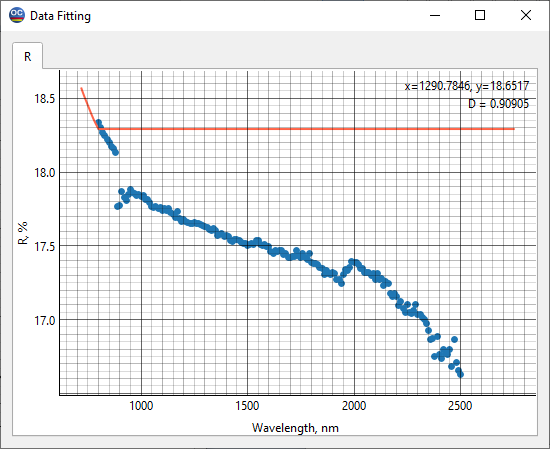
Use the Modify Measurement option and remove the measurement data in the spectral region from 890 to 940 nm. The corrected datafile is stored under the name 800-2500 nm, one side R data without 890-940 nm band. Go to the Substrate characterization and use n(lambda) model with the default setting for the Smooth slider. Check the substrate refractive index in the Substrate Plots window. It has too many small variations, which means it is worth increasing the requirements for the refractive index smoothness.
Move the slider in the Substrate Characterization Setup window three steps higher and run the substrate characterization again. The obtained refractive index is smoother. It is stored in the Substrate database under the name ZnSe at 800-2500 nm - n(lambda) model.
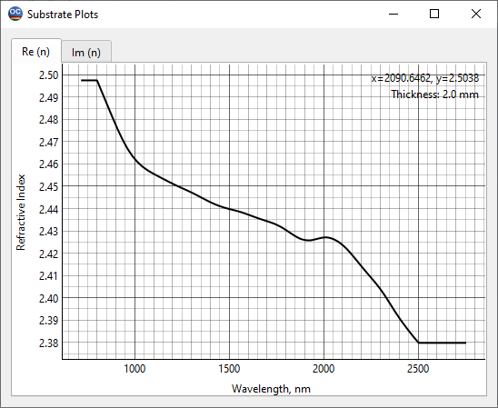
Check the agreement between the ZnSe refractive indices found from the 400-800 nm range data and the 800-2500 nm range data at 800nm. The index values at this wavelength are almost identical: they differ by less than 0.1%.
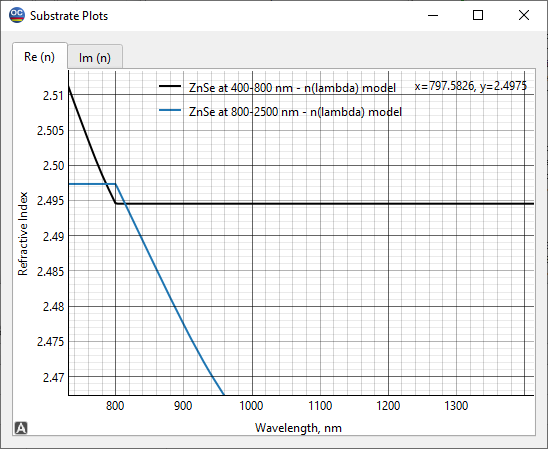
The results can be combined in a single ZnSe index file for the 400-2500 nm spectral region. This combined index file is stored under the name ZnSe at 400-2500 nm - combined data.
Let us look at the absorption in the substrate. We have a datafile 400-800 nm, T data with the transmittance data measured in the spectral region of 400-800 nm. So, we can try to find the extinction coefficient of the ZnSe substrate. Let us load the datafile 400-800 nm, T data into RAM.
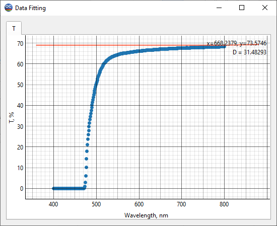
We see that the substrate completely absorbs below 480 nm. So, we can search for the extinction coefficient only in the spectral region starting from 480 nm. To do this, load the substrate refractive index ZnSe at 400-800 nm: n(lambda) model and append the reflectance datafile 400-800 nm, one side R data to the already loaded transmittance data. Go to the Preprocess Measurement Data option in the Data menu and truncate all measurement data below 480 nm.
In the Substrate Characterization Setup window, select the Loaded model for the refractive index and the UV-VIS model for the extinction coefficient. Check that the Upper Limit for the extinction coefficient is not less than 0.1.
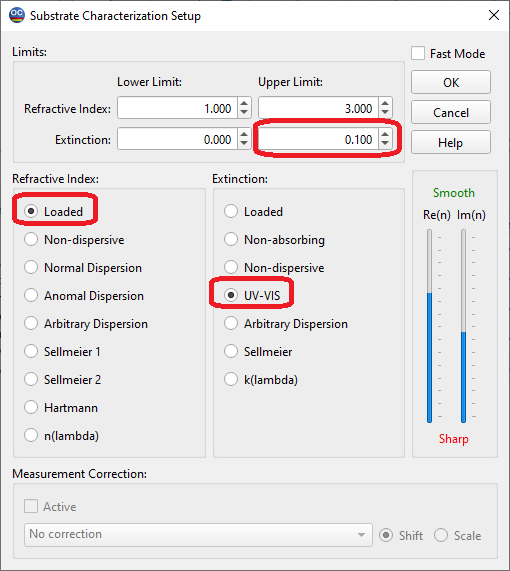
Click OK to run Substrate characterization. The discrepancy value decreases to 0.87. The obtained refractive index and extinction coefficient are stored in the datafile ZnSe with absorption at 480-800 nm.
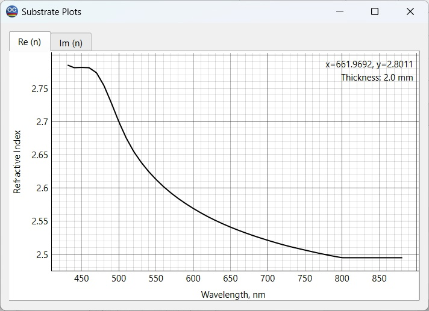 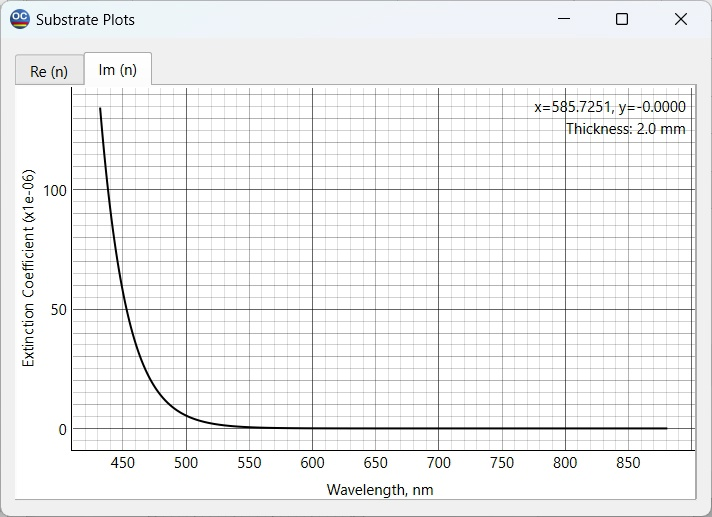